ADANA ARKEOLOJİ MÜZESİ
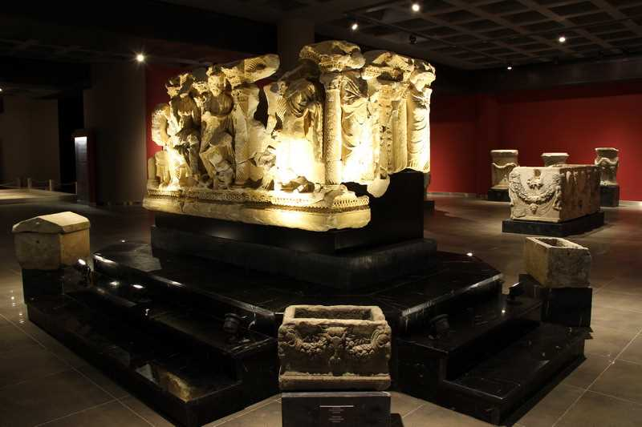AYDIN ARKEOLOJİ MÜZESİ
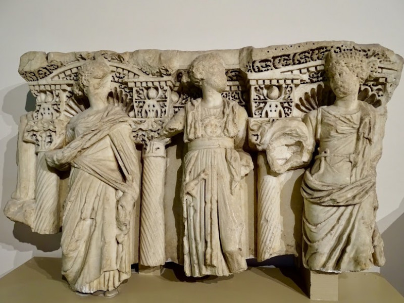BURSA ARKEOLOJİ MÜZESİ

BODRUM SUALTI ARKEOLOJİ MÜZESİ

DİYARBAKIR ARKEOLOJİ MÜZESİ
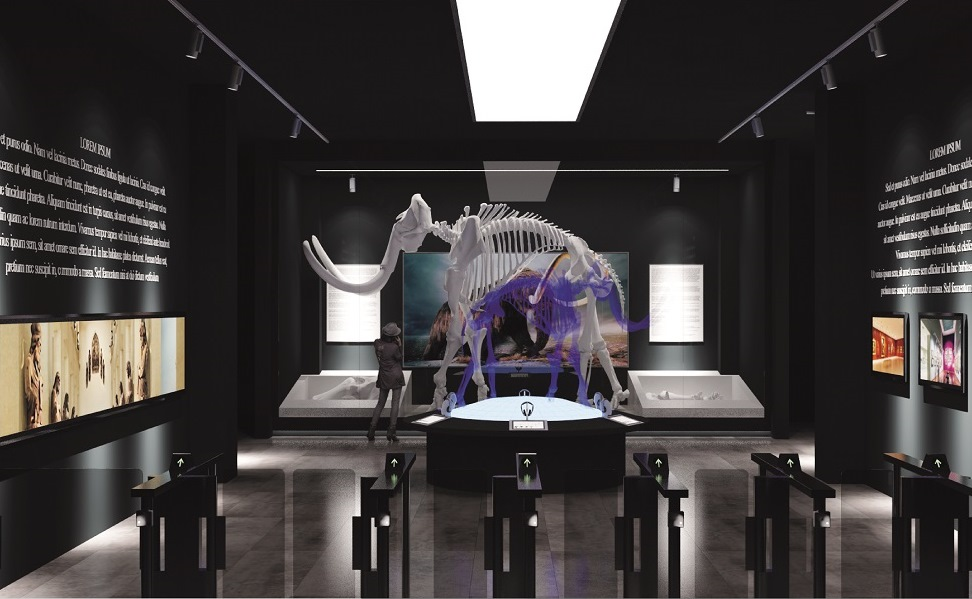ERZURUM ARKEOLOJİ MÜZESİ
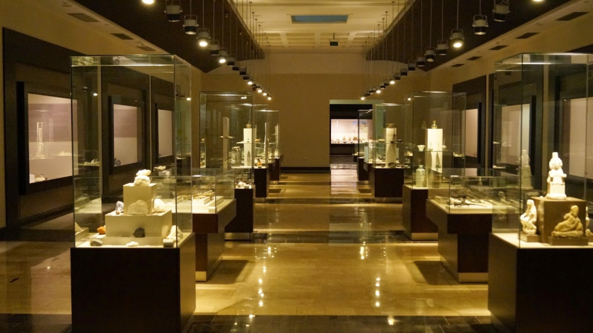ETİ ARKEOLOJİ MÜZESİ
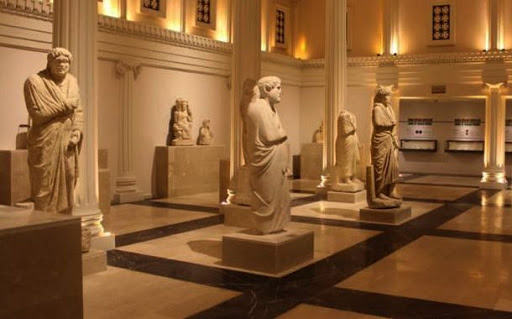GAZİANTAP ARKEOLOJİ MÜZESİ
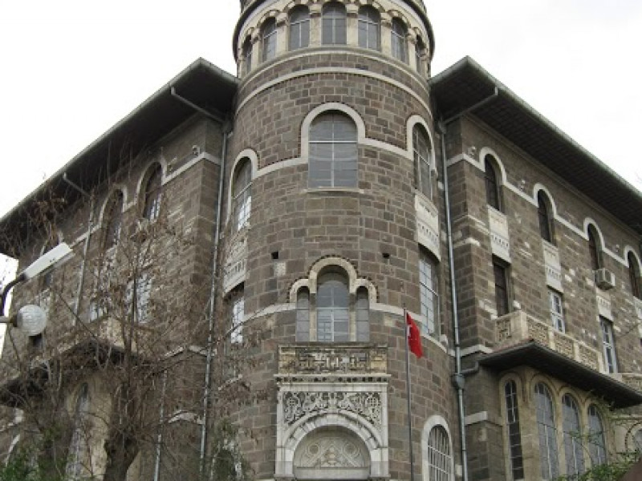İZMİR ARKEOLOJİ MÜZESİ
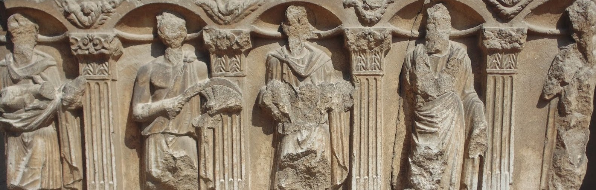KONYA ARKEOLOJİ MÜZESİ
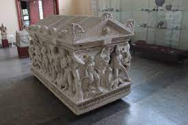KAYSERİ ARKEOLOJİ MÜZESİ
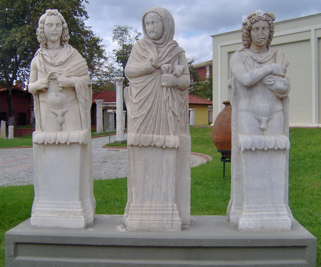KAYSERİ ARKEOLOJİ MÜZESİ
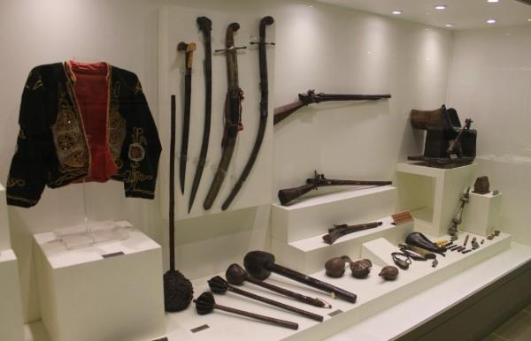NEVŞEHİR HACIBEKTAŞ ARKEOLOJİ VE ETNOGRAFYA MÜZESİ
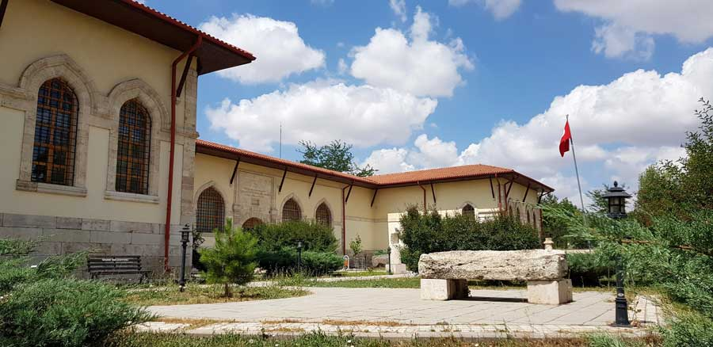SİVAS ARKEOLOJİ MÜZESİ
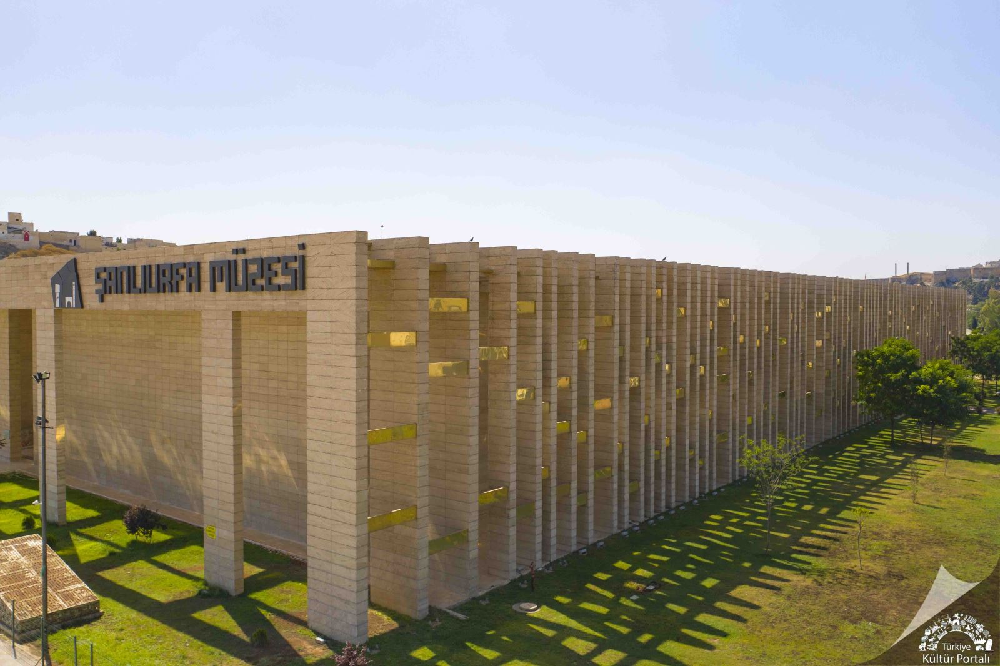ŞANLIURFA ARKEOLOJİ MÜZESİ
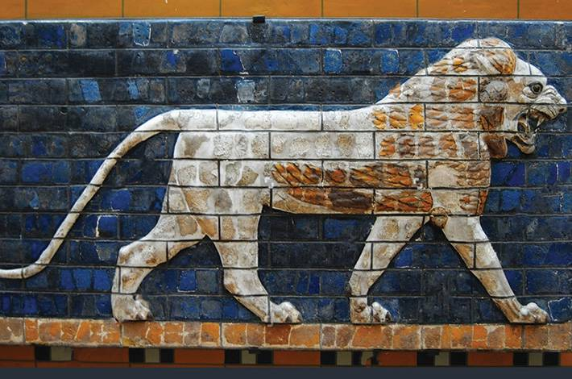İSTANBUL ARKEOLOJİ MÜZELERİ

AİZANOİ ÖRENYERi
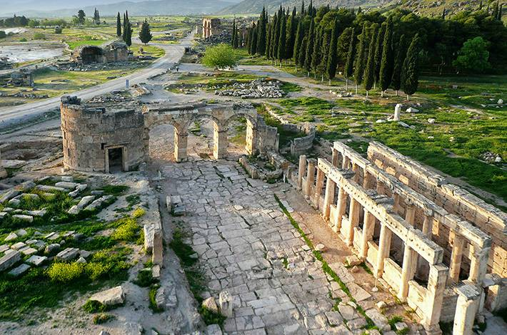HİERAPOLİS (PAMUKKALE) ARKEOLOJİ ÖRENYERİ
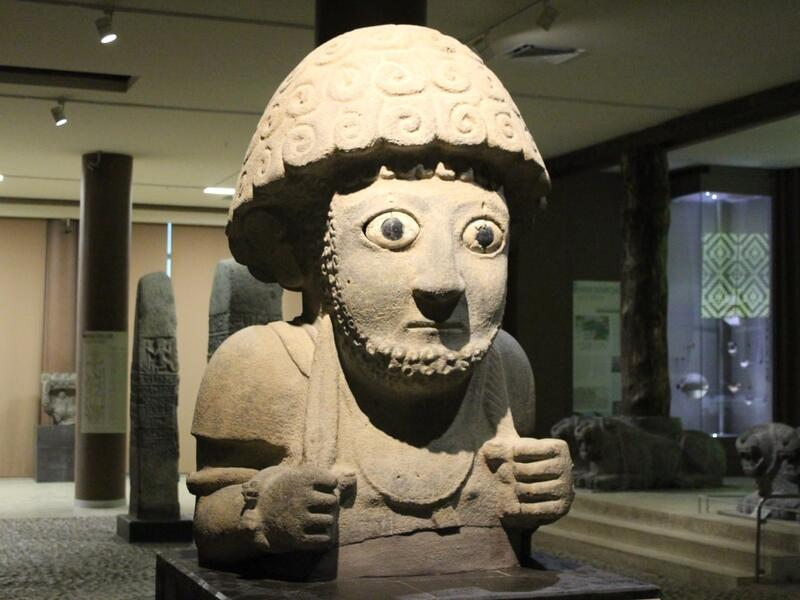HATAY ARKEOLOJİ MÜZESİ
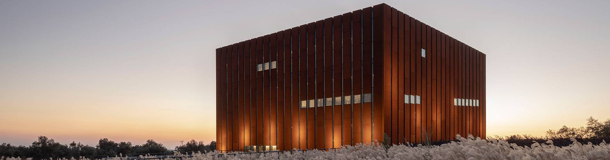TORYA MÜZESİ
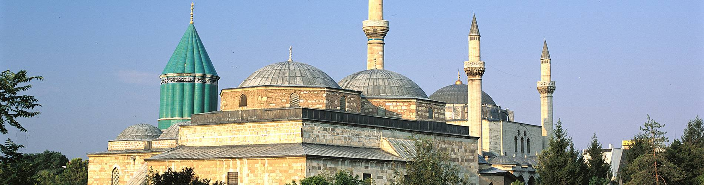MEVLANA MÜZESİ